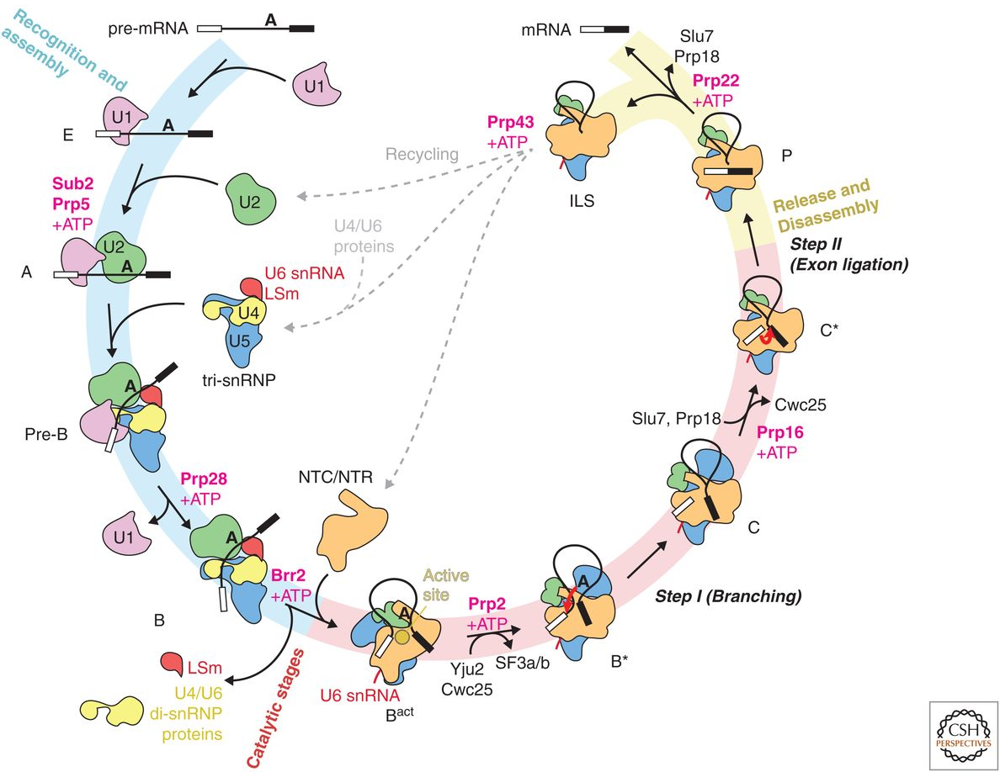

The human genome is a large DNA molecule composed by thousands of RNAs that regulates several metabolic pathways and participates in distinct cellular and molecular phenotypes. Independently of the classes they belongs to, most of transcribed RNA molecules undergo to a pos-transcriptional regulation called splicing. Briefly, splicing of RNA involves several steps to process primary messenger RNA molecules (pre-mRNA) to generate mature messenger RNAs (mRNA) (Figure 1). During each step of pre-mRNA processing, several so called ribonsmall nuclear ucleoproteins (snRNAs) are combine with unmodified pre-mRNA and various other proteins to form a spliceosome. Thus, spliceosome regulates how pre-mRNA transcripts are spliced to generated a specific splicing isoform of a gene.
 Figure 1 – snRNAs in the processing of pre-mRNA to generate a specific splicing isoform of a gene (mature mRNA molecule). Reference: Plaschka C, Newman AJ, Nagai K. Structural Basis of Nuclear pre-mRNA Splicing: Lessons from Yeast. Cold Spring Harb Perspect Biol. 2019 May 1;11(5):a032391. doi: 10.1101/cshperspect.a032391.